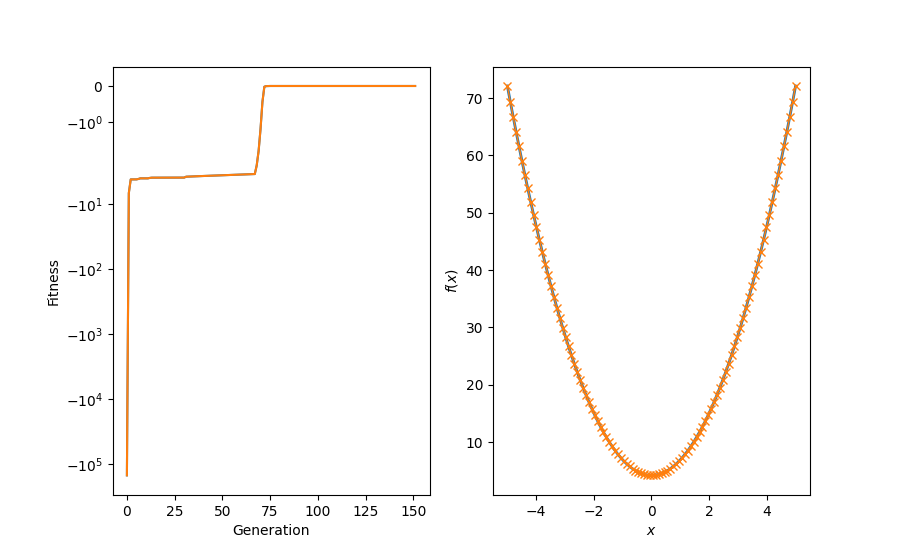

<!DOCTYPE html>
<html class="writer-html5" lang="en" >
<head>
  <meta charset="utf-8" />
  
  <meta name="viewport" content="width=device-width, initial-scale=1.0" />
  
  <title>Example for evolutionary regression with local search via evolution strategies &mdash; hal-cgp 0.2.0 documentation</title>
  

  
  <link rel="stylesheet" href="../_static/css/msmb.css" type="text/css" />
  <link rel="stylesheet" href="../_static/pygments.css" type="text/css" />
  <link rel="stylesheet" href="../_static/gallery.css" type="text/css" />
  <link rel="stylesheet" href="../_static/gallery-binder.css" type="text/css" />
  <link rel="stylesheet" href="../_static/gallery-dataframe.css" type="text/css" />
  <link rel="stylesheet" href="../_static/gallery-rendered-html.css" type="text/css" />

  
  

  
  

  

  
  <!--[if lt IE 9]>
    <script src="../_static/js/html5shiv.min.js"></script>
  <![endif]-->
  
    
      <script type="text/javascript" id="documentation_options" data-url_root="../" src="../_static/documentation_options.js"></script>
        <script src="../_static/jquery.js"></script>
        <script src="../_static/underscore.js"></script>
        <script src="../_static/doctools.js"></script>
        <script src="../_static/language_data.js"></script>
        <script src="../_static/js/versions.js"></script>
    
    <script type="text/javascript" src="../_static/js/theme.js"></script>

    
    <link rel="index" title="Index" href="../genindex.html" />
    <link rel="search" title="Search" href="../search.html" />
    <link rel="next" title="Example for evolutionary regression" href="example_evo_regression.html" />
    <link rel="prev" title="Example for differential evolutionary regression" href="example_differential_evo_regression.html" /> 
</head>

<body class="wy-body-for-nav">

   
  <div class="wy-grid-for-nav">
    
    <nav data-toggle="wy-nav-shift" class="wy-nav-side">
      <div class="wy-side-scroll">
        <div class="wy-side-nav-search" >
          

          
            <a href="../index.html" class="icon icon-home"> hal-cgp
          

          
          </a>

          
            
            
          

          
<div role="search">
  <form id="rtd-search-form" class="wy-form" action="../search.html" method="get">
    <input type="text" name="q" placeholder="Search docs" />
    <input type="hidden" name="check_keywords" value="yes" />
    <input type="hidden" name="area" value="default" />
  </form>
</div>

          
        </div>

        
        <div class="wy-menu wy-menu-vertical" data-spy="affix" role="navigation" aria-label="main navigation">
          
            
            
              
            
            
              <ul class="current">
<li class="toctree-l1"><a class="reference internal" href="../installation.html">Installation</a></li>
<li class="toctree-l1"><a class="reference internal" href="../basic_usage.html">Basic usage</a></li>
<li class="toctree-l1"><a class="reference internal" href="../documentation/documentation.html">Documentation</a></li>
<li class="toctree-l1 current"><a class="reference internal" href="index.html">Examples</a><ul class="current">
<li class="toctree-l2"><a class="reference internal" href="example_caching.html">Example demonstrating the use of the caching decorator.</a></li>
<li class="toctree-l2"><a class="reference internal" href="example_fec_caching.html">Example demonstrating the use of the caching decorator with functional equivalance checking</a></li>
<li class="toctree-l2"><a class="reference internal" href="example_minimal.html">Minimal example for evolutionary regression</a></li>
<li class="toctree-l2"><a class="reference internal" href="example_multi_genome.html">Example for evolutionary regression with multiple genomes</a></li>
<li class="toctree-l2"><a class="reference internal" href="example_reorder.html">Example for evolutionary regression with genome reordering</a></li>
<li class="toctree-l2"><a class="reference internal" href="example_hurdles.html">Minimal example for evolutionary regression using hurdles</a></li>
<li class="toctree-l2"><a class="reference internal" href="example_piecewise_target_function.html">Example for evolutionary regression on a piecewise target function</a></li>
<li class="toctree-l2"><a class="reference internal" href="example_parametrized_nodes.html">Example for evolutionary regression with parametrized nodes</a></li>
<li class="toctree-l2"><a class="reference internal" href="example_differential_evo_regression.html">Example for differential evolutionary regression</a></li>
<li class="toctree-l2 current"><a class="current reference internal" href="#">Example for evolutionary regression with local search via evolution strategies</a></li>
<li class="toctree-l2"><a class="reference internal" href="example_evo_regression.html">Example for evolutionary regression</a></li>
<li class="toctree-l2"><a class="reference internal" href="example_mountain_car.html">Example: Solving an OpenAI Gym environment with CGP.</a></li>
</ul>
</li>
<li class="toctree-l1"><a class="reference internal" href="../api_reference/api_reference.html">API reference</a></li>
<li class="toctree-l1"><a class="reference internal" href="../references.html">References</a></li>
<li class="toctree-l1"><a class="reference internal" href="../citation.html">Citation</a></li>
</ul>

            
          
        </div>
        
      </div>
    </nav>

    <section data-toggle="wy-nav-shift" class="wy-nav-content-wrap">

      
      <nav class="wy-nav-top" aria-label="top navigation">
        
          <i data-toggle="wy-nav-top" class="fa fa-bars"></i>
          <a href="../index.html">hal-cgp</a>
        
      </nav>


      <div class="wy-nav-content">
        
        <div class="rst-content">
        
          


<div role="navigation" aria-label="breadcrumbs navigation">

  <ul class="wy-breadcrumbs">
    
      <li><a href="../index.html" class="icon icon-home"></a> &raquo;</li>
        
          <li><a href="index.html">Examples</a> &raquo;</li>
        
      <li>Example for evolutionary regression with local search via evolution strategies</li>
    
    
      <li class="wy-breadcrumbs-aside">
        
          
            <a href="../_sources/auto_examples/example_local_search_evolution_strategies.rst.txt" rel="nofollow"> View page source</a>
          
        
      </li>
    
  </ul>

  
  <hr/>
</div>
          <div role="main" class="document" itemscope="itemscope" itemtype="http://schema.org/Article">
           <div itemprop="articleBody">
            
  <div class="sphx-glr-download-link-note admonition note">
<p class="admonition-title">Note</p>
<p>Click <a class="reference internal" href="#sphx-glr-download-auto-examples-example-local-search-evolution-strategies-py"><span class="std std-ref">here</span></a>
to download the full example code</p>
</div>
<div class="sphx-glr-example-title section" id="example-for-evolutionary-regression-with-local-search-via-evolution-strategies">
<span id="sphx-glr-auto-examples-example-local-search-evolution-strategies-py"></span><h1>Example for evolutionary regression with local search via evolution strategies<a class="headerlink" href="#example-for-evolutionary-regression-with-local-search-via-evolution-strategies" title="Permalink to this headline">¶</a></h1>
<p>Example demonstrating the use of Cartesian genetic programming for a
regression task that involves numeric constants. Local search via
evolution strategies is used to determine numeric leaf values of the
graph.</p>
<div class="highlight-default notranslate"><div class="highlight"><pre><span></span><span class="c1"># The docopt str is added explicitly to ensure compatibility with</span>
<span class="c1"># sphinx-gallery.</span>
<span class="n">docopt_str</span> <span class="o">=</span> <span class="s2">&quot;&quot;&quot;</span>
<span class="s2">  Usage:</span>
<span class="s2">    example_local_search_evolution_strategies.py [--max-generations=&lt;N&gt;]</span>

<span class="s2">  Options:</span>
<span class="s2">    -h --help</span>
<span class="s2">    --max-generations=&lt;N&gt;  Maximum number of generations [default: 500]</span>

<span class="s2">&quot;&quot;&quot;</span>

<span class="kn">import</span> <span class="nn">functools</span>

<span class="kn">import</span> <span class="nn">matplotlib.pyplot</span> <span class="k">as</span> <span class="nn">plt</span>
<span class="kn">import</span> <span class="nn">numpy</span> <span class="k">as</span> <span class="nn">np</span>
<span class="kn">import</span> <span class="nn">scipy.constants</span>
<span class="kn">from</span> <span class="nn">docopt</span> <span class="kn">import</span> <span class="n">docopt</span>

<span class="kn">import</span> <span class="nn">cgp</span>

<span class="n">args</span> <span class="o">=</span> <span class="n">docopt</span><span class="p">(</span><span class="n">docopt_str</span><span class="p">)</span>
</pre></div>
</div>
<p>We first define the target function. Note that this function contains
numeric values which are initially not available as constants to the search.</p>
<div class="highlight-default notranslate"><div class="highlight"><pre><span></span><span class="k">def</span> <span class="nf">f_target</span><span class="p">(</span><span class="n">x</span><span class="p">):</span>
    <span class="k">return</span> <span class="n">np</span><span class="o">.</span><span class="n">e</span> <span class="o">*</span> <span class="n">x</span> <span class="o">**</span> <span class="mi">2</span> <span class="o">+</span> <span class="mf">1.0</span> <span class="o">+</span> <span class="n">np</span><span class="o">.</span><span class="n">pi</span>
</pre></div>
</div>
<p>Then we define the objective function for the evolution. It consists
of an inner objective which accepts a NumPy-compatible function as
its first argument and returns the mean-squared error between the
expression represented by a given individual and the target function
evaluated on a set of random points. This inner objective is used by
the local search to determine appropriate values for Parameter node
and the actual objective function to update the fitness of the
individual.</p>
<div class="highlight-default notranslate"><div class="highlight"><pre><span></span><span class="k">def</span> <span class="nf">inner_objective</span><span class="p">(</span><span class="n">ind</span><span class="p">,</span> <span class="n">seed</span><span class="p">):</span>
    <span class="sd">&quot;&quot;&quot;Return a loss for the numpy-compatible function f. Used for</span>
<span class="sd">    calculating the fitness of each individual and for the local</span>
<span class="sd">    search of numeric leaf values.</span>

<span class="sd">    &quot;&quot;&quot;</span>

    <span class="n">f</span> <span class="o">=</span> <span class="n">ind</span><span class="o">.</span><span class="n">to_numpy</span><span class="p">()</span>
    <span class="n">rng</span> <span class="o">=</span> <span class="n">np</span><span class="o">.</span><span class="n">random</span><span class="o">.</span><span class="n">RandomState</span><span class="p">(</span><span class="n">seed</span><span class="p">)</span>
    <span class="n">batch_size</span> <span class="o">=</span> <span class="mi">500</span>
    <span class="n">x</span> <span class="o">=</span> <span class="n">rng</span><span class="o">.</span><span class="n">uniform</span><span class="p">(</span><span class="o">-</span><span class="mi">5</span><span class="p">,</span> <span class="mi">5</span><span class="p">,</span> <span class="n">size</span><span class="o">=</span><span class="n">batch_size</span><span class="p">)</span>
    <span class="n">y</span> <span class="o">=</span> <span class="n">f</span><span class="p">(</span><span class="n">x</span><span class="p">)</span>
    <span class="k">return</span> <span class="o">-</span><span class="n">np</span><span class="o">.</span><span class="n">mean</span><span class="p">((</span><span class="n">f_target</span><span class="p">(</span><span class="n">x</span><span class="p">)</span> <span class="o">-</span> <span class="n">y</span><span class="p">)</span> <span class="o">**</span> <span class="mi">2</span><span class="p">)</span>


<span class="k">def</span> <span class="nf">objective</span><span class="p">(</span><span class="n">individual</span><span class="p">,</span> <span class="n">seed</span><span class="p">):</span>
    <span class="sd">&quot;&quot;&quot;Objective function of the regression task.&quot;&quot;&quot;</span>

    <span class="k">if</span> <span class="ow">not</span> <span class="n">individual</span><span class="o">.</span><span class="n">fitness_is_None</span><span class="p">():</span>
        <span class="k">return</span> <span class="n">individual</span>

    <span class="n">individual</span><span class="o">.</span><span class="n">fitness</span> <span class="o">=</span> <span class="n">inner_objective</span><span class="p">(</span><span class="n">individual</span><span class="p">,</span> <span class="n">seed</span><span class="p">)</span>

    <span class="k">return</span> <span class="n">individual</span>
</pre></div>
</div>
<p>Next, we define the parameters for the population, the genome of
individuals, the evolutionary algorithm, and the local search.</p>
<div class="highlight-default notranslate"><div class="highlight"><pre><span></span><span class="n">population_params</span> <span class="o">=</span> <span class="p">{</span><span class="s2">&quot;n_parents&quot;</span><span class="p">:</span> <span class="mi">1</span><span class="p">,</span> <span class="s2">&quot;seed&quot;</span><span class="p">:</span> <span class="mi">818821</span><span class="p">}</span>

<span class="n">genome_params</span> <span class="o">=</span> <span class="p">{</span>
    <span class="s2">&quot;n_inputs&quot;</span><span class="p">:</span> <span class="mi">1</span><span class="p">,</span>
    <span class="s2">&quot;n_outputs&quot;</span><span class="p">:</span> <span class="mi">1</span><span class="p">,</span>
    <span class="s2">&quot;n_columns&quot;</span><span class="p">:</span> <span class="mi">36</span><span class="p">,</span>
    <span class="s2">&quot;n_rows&quot;</span><span class="p">:</span> <span class="mi">1</span><span class="p">,</span>
    <span class="s2">&quot;levels_back&quot;</span><span class="p">:</span> <span class="kc">None</span><span class="p">,</span>
    <span class="s2">&quot;primitives&quot;</span><span class="p">:</span> <span class="p">(</span><span class="n">cgp</span><span class="o">.</span><span class="n">Add</span><span class="p">,</span> <span class="n">cgp</span><span class="o">.</span><span class="n">Sub</span><span class="p">,</span> <span class="n">cgp</span><span class="o">.</span><span class="n">Mul</span><span class="p">,</span> <span class="n">cgp</span><span class="o">.</span><span class="n">Parameter</span><span class="p">),</span>
<span class="p">}</span>

<span class="n">ea_params</span> <span class="o">=</span> <span class="p">{</span>
    <span class="s2">&quot;n_offsprings&quot;</span><span class="p">:</span> <span class="mi">4</span><span class="p">,</span>
    <span class="s2">&quot;mutation_rate&quot;</span><span class="p">:</span> <span class="mf">0.05</span><span class="p">,</span>
    <span class="s2">&quot;tournament_size&quot;</span><span class="p">:</span> <span class="mi">1</span><span class="p">,</span>
    <span class="s2">&quot;n_processes&quot;</span><span class="p">:</span> <span class="mi">1</span><span class="p">,</span>
    <span class="s2">&quot;k_local_search&quot;</span><span class="p">:</span> <span class="mi">2</span><span class="p">,</span>
<span class="p">}</span>

<span class="n">evolve_params</span> <span class="o">=</span> <span class="p">{</span><span class="s2">&quot;max_generations&quot;</span><span class="p">:</span> <span class="nb">int</span><span class="p">(</span><span class="n">args</span><span class="p">[</span><span class="s2">&quot;--max-generations&quot;</span><span class="p">]),</span> <span class="s2">&quot;termination_fitness&quot;</span><span class="p">:</span> <span class="mf">0.0</span><span class="p">}</span>

<span class="c1"># restrict the number of steps in the local search; since parameter</span>
<span class="c1"># values are propagated from parents to offsprings, parameter values</span>
<span class="c1"># may be iteratively improved across generations despite the small</span>
<span class="c1"># number of steps per generation</span>
<span class="n">local_search_params</span> <span class="o">=</span> <span class="p">{</span><span class="s2">&quot;max_steps&quot;</span><span class="p">:</span> <span class="mi">5</span><span class="p">}</span>
</pre></div>
</div>
<p>We then create a Population instance and instantiate the local search
and evolutionary algorithm.</p>
<div class="highlight-default notranslate"><div class="highlight"><pre><span></span><span class="n">pop</span> <span class="o">=</span> <span class="n">cgp</span><span class="o">.</span><span class="n">Population</span><span class="p">(</span><span class="o">**</span><span class="n">population_params</span><span class="p">,</span> <span class="n">genome_params</span><span class="o">=</span><span class="n">genome_params</span><span class="p">)</span>

<span class="c1"># define the function for local search; an instance of the</span>
<span class="c1"># EvolutionStrategies can be called with an individual as an argument</span>
<span class="c1"># for which the local search is performed</span>
<span class="n">local_search</span> <span class="o">=</span> <span class="n">cgp</span><span class="o">.</span><span class="n">local_search</span><span class="o">.</span><span class="n">EvolutionStrategies</span><span class="p">(</span>
    <span class="n">objective</span><span class="o">=</span><span class="n">functools</span><span class="o">.</span><span class="n">partial</span><span class="p">(</span><span class="n">inner_objective</span><span class="p">,</span> <span class="n">seed</span><span class="o">=</span><span class="n">population_params</span><span class="p">[</span><span class="s2">&quot;seed&quot;</span><span class="p">]</span> <span class="o">+</span> <span class="mi">1</span><span class="p">),</span>
    <span class="n">seed</span><span class="o">=</span><span class="n">population_params</span><span class="p">[</span><span class="s2">&quot;seed&quot;</span><span class="p">]</span> <span class="o">+</span> <span class="mi">2</span><span class="p">,</span>
    <span class="o">**</span><span class="n">local_search_params</span><span class="p">,</span>
<span class="p">)</span>

<span class="n">ea</span> <span class="o">=</span> <span class="n">cgp</span><span class="o">.</span><span class="n">ea</span><span class="o">.</span><span class="n">MuPlusLambda</span><span class="p">(</span><span class="o">**</span><span class="n">ea_params</span><span class="p">,</span> <span class="n">local_search</span><span class="o">=</span><span class="n">local_search</span><span class="p">)</span>
</pre></div>
</div>
<p>We define a recording callback closure for bookkeeping of the progression of the evolution.</p>
<div class="highlight-default notranslate"><div class="highlight"><pre><span></span><span class="n">history</span> <span class="o">=</span> <span class="p">{}</span>
<span class="n">history</span><span class="p">[</span><span class="s2">&quot;champion&quot;</span><span class="p">]</span> <span class="o">=</span> <span class="p">[]</span>
<span class="n">history</span><span class="p">[</span><span class="s2">&quot;fitness_parents&quot;</span><span class="p">]</span> <span class="o">=</span> <span class="p">[]</span>


<span class="k">def</span> <span class="nf">recording_callback</span><span class="p">(</span><span class="n">pop</span><span class="p">):</span>
    <span class="n">history</span><span class="p">[</span><span class="s2">&quot;champion&quot;</span><span class="p">]</span><span class="o">.</span><span class="n">append</span><span class="p">(</span><span class="n">pop</span><span class="o">.</span><span class="n">champion</span><span class="p">)</span>
    <span class="n">history</span><span class="p">[</span><span class="s2">&quot;fitness_parents&quot;</span><span class="p">]</span><span class="o">.</span><span class="n">append</span><span class="p">(</span><span class="n">pop</span><span class="o">.</span><span class="n">fitness_parents</span><span class="p">())</span>


<span class="n">obj</span> <span class="o">=</span> <span class="n">functools</span><span class="o">.</span><span class="n">partial</span><span class="p">(</span><span class="n">objective</span><span class="p">,</span> <span class="n">seed</span><span class="o">=</span><span class="n">population_params</span><span class="p">[</span><span class="s2">&quot;seed&quot;</span><span class="p">]</span> <span class="o">+</span> <span class="mi">1</span><span class="p">)</span>
</pre></div>
</div>
<p>Finally, we call the <cite>evolve</cite> method to perform the evolutionary search.</p>
<div class="highlight-default notranslate"><div class="highlight"><pre><span></span><span class="n">cgp</span><span class="o">.</span><span class="n">evolve</span><span class="p">(</span><span class="n">pop</span><span class="p">,</span> <span class="n">obj</span><span class="p">,</span> <span class="n">ea</span><span class="p">,</span> <span class="o">**</span><span class="n">evolve_params</span><span class="p">,</span> <span class="n">print_progress</span><span class="o">=</span><span class="kc">True</span><span class="p">,</span> <span class="n">callback</span><span class="o">=</span><span class="n">recording_callback</span><span class="p">)</span>
</pre></div>
</div>
<p class="sphx-glr-script-out">Out:</p>
<div class="sphx-glr-script-out highlight-none notranslate"><div class="highlight"><pre><span></span>[2/500] max fitness: -6.881744583806576
[3/500] max fitness: -4.239318139952327
[4/500] max fitness: -4.239318139952327
[5/500] max fitness: -4.239318139952327
[6/500] max fitness: -4.2376957679343406
[7/500] max fitness: -4.175395171937035
[8/500] max fitness: -4.0843059447257115
[9/500] max fitness: -4.0843059447257115
[10/500] max fitness: -4.0843059447257115
[11/500] max fitness: -4.0843059447257115
[12/500] max fitness: -4.0843059447257115
[13/500] max fitness: -4.020180611862108
[14/500] max fitness: -3.987534685393779
[15/500] max fitness: -3.987534685393779
[16/500] max fitness: -3.982115911323054
[17/500] max fitness: -3.982115911323054
[18/500] max fitness: -3.982115911323054
[19/500] max fitness: -3.982115911323054
[20/500] max fitness: -3.982115911323054
[21/500] max fitness: -3.982115911323054
[22/500] max fitness: -3.982115911323054
[23/500] max fitness: -3.982115911323054
[24/500] max fitness: -3.982115911323054
[25/500] max fitness: -3.9783604395665826
[26/500] max fitness: -3.9783604395665826
[27/500] max fitness: -3.975963080498914
[28/500] max fitness: -3.9750413898704484
[29/500] max fitness: -3.9750413898704484
[30/500] max fitness: -3.974868290993899
[31/500] max fitness: -3.974868290993899
[32/500] max fitness: -3.85342666502812
[33/500] max fitness: -3.840948237271232
[34/500] max fitness: -3.829865951473381
[35/500] max fitness: -3.818854139942691
[36/500] max fitness: -3.8079393011551694
[37/500] max fitness: -3.7975692305038242
[38/500] max fitness: -3.787213475511162
[39/500] max fitness: -3.777223610695676
[40/500] max fitness: -3.766680768725331
[41/500] max fitness: -3.756839938976412
[42/500] max fitness: -3.747036064090625
[43/500] max fitness: -3.737381219897841
[44/500] max fitness: -3.7277175758131427
[45/500] max fitness: -3.717793730125041
[46/500] max fitness: -3.708016854400642
[47/500] max fitness: -3.6982601042564305
[48/500] max fitness: -3.688439543144267
[49/500] max fitness: -3.6788614880092063
[50/500] max fitness: -3.669222551648229
[51/500] max fitness: -3.6598265812526587
[52/500] max fitness: -3.650306313723362
[53/500] max fitness: -3.6405507370383074
[54/500] max fitness: -3.631311431721749
[55/500] max fitness: -3.622171681144139
[56/500] max fitness: -3.6129228307197043
[57/500] max fitness: -3.603532773075208
[58/500] max fitness: -3.594538835130544
[59/500] max fitness: -3.586006858898131
[60/500] max fitness: -3.577134500980999
[61/500] max fitness: -3.5681746010612367
[62/500] max fitness: -3.5589700921389666
[63/500] max fitness: -3.549600907592355
[64/500] max fitness: -3.5401113788503706
[65/500] max fitness: -3.5310973427172017
[66/500] max fitness: -3.5225028551289825
[67/500] max fitness: -3.5135724845686473
[68/500] max fitness: -3.504486214365747
[69/500] max fitness: -2.5814693162841014
[70/500] max fitness: -1.798765523939992
[71/500] max fitness: -1.1925933685462708
[72/500] max fitness: -0.44130265714672784
[73/500] max fitness: -0.020641384104450395
[74/500] max fitness: -0.0034663029647299206
[75/500] max fitness: -0.0005979864681252498
[76/500] max fitness: -0.00010324056328251351
[77/500] max fitness: -2.6186226050626374e-05
[78/500] max fitness: -5.921426996423762e-06
[79/500] max fitness: -1.1824540864575155e-06
[80/500] max fitness: -5.070027011077923e-08
[81/500] max fitness: -5.070027011077923e-08
[82/500] max fitness: -3.078209891681923e-08
[83/500] max fitness: -3.078209891681923e-08
[84/500] max fitness: -3.078209891681923e-08
[85/500] max fitness: -4.929644402485364e-09
[86/500] max fitness: -4.929644402485364e-09
[87/500] max fitness: -4.929644402485364e-09
[88/500] max fitness: -4.929644402485364e-09
[89/500] max fitness: -4.929644402485364e-09
[90/500] max fitness: -4.929644402485364e-09
[91/500] max fitness: -4.929644402485364e-09
[92/500] max fitness: -4.929644402485364e-09
[93/500] max fitness: -4.30848985793525e-09
[94/500] max fitness: -3.6749018276108156e-09
[95/500] max fitness: -2.9841780186794337e-09
[96/500] max fitness: -2.9841780186794337e-09
[97/500] max fitness: -2.9351615812390943e-09
[98/500] max fitness: -2.93075211976597e-09
[99/500] max fitness: -2.93075211976597e-09
[100/500] max fitness: -2.7351892061894353e-09
[101/500] max fitness: -2.7351892061894353e-09
[102/500] max fitness: -2.7351892061894353e-09
[103/500] max fitness: -2.7351892061894353e-09
[104/500] max fitness: -2.6617300319014235e-09
[105/500] max fitness: -2.6617300319014235e-09
[106/500] max fitness: -2.6617300319014235e-09
[107/500] max fitness: -2.6617300319014235e-09
[108/500] max fitness: -2.6617300319014235e-09
[109/500] max fitness: -2.6617300319014235e-09
[110/500] max fitness: -2.6580956920261464e-09
[111/500] max fitness: -2.6580956920261464e-09
[112/500] max fitness: -2.6580956920261464e-09
[113/500] max fitness: -2.6580956920261464e-09
[114/500] max fitness: -2.6580956920261464e-09
[115/500] max fitness: -2.6580956920261464e-09
[116/500] max fitness: -2.6580956920261464e-09
[117/500] max fitness: -2.6576550322519943e-09
[118/500] max fitness: -2.6576550322519943e-09
[119/500] max fitness: -2.6576550322519943e-09
[120/500] max fitness: -2.6576550322519943e-09
[121/500] max fitness: -2.6576550322519943e-09
[122/500] max fitness: -2.657636629725745e-09
[123/500] max fitness: -2.657636629725745e-09
[124/500] max fitness: -2.6576253172100185e-09
[125/500] max fitness: -2.6576253172100185e-09
[126/500] max fitness: -2.6576253172100185e-09
[127/500] max fitness: -2.6576253172100185e-09
[128/500] max fitness: -2.6576253172100185e-09
[129/500] max fitness: -2.6576253172100185e-09
[130/500] max fitness: -2.6576164997562943e-09
[131/500] max fitness: -2.6576164997562943e-09
[132/500] max fitness: -2.6576164997562943e-09
[133/500] max fitness: -2.6576164997562943e-09
[134/500] max fitness: -2.6576164997562943e-09
[135/500] max fitness: -2.6541571293983925e-09
[136/500] max fitness: -2.6400979702486384e-09
[137/500] max fitness: -2.6067651992255644e-09
[138/500] max fitness: -2.528749678874879e-09
[139/500] max fitness: -2.353336721564865e-09
[140/500] max fitness: -1.9980557885494574e-09
[141/500] max fitness: -1.5205501545528233e-09
[142/500] max fitness: -1.472070164033228e-09
[143/500] max fitness: -1.4019798683029157e-09
[144/500] max fitness: -1.282764124910066e-09
[145/500] max fitness: -1.1341527722339276e-09
[146/500] max fitness: -9.61042589977955e-10
[147/500] max fitness: -7.578954444223847e-10
[148/500] max fitness: -5.577680973949372e-10
[149/500] max fitness: -3.8029804289412244e-10
[150/500] max fitness: -2.375868784809527e-10
[151/500] max fitness: -1.290325442051286e-10
[152/500] max fitness: -4.339237606313096e-11
</pre></div>
</div>
<p>After finishing the evolution, we plot the result and log the final
evolved expression.</p>
<div class="highlight-default notranslate"><div class="highlight"><pre><span></span><span class="n">width</span> <span class="o">=</span> <span class="mf">9.0</span>
<span class="n">fig</span> <span class="o">=</span> <span class="n">plt</span><span class="o">.</span><span class="n">figure</span><span class="p">(</span><span class="n">figsize</span><span class="o">=</span><span class="p">(</span><span class="n">width</span><span class="p">,</span> <span class="n">width</span> <span class="o">/</span> <span class="n">scipy</span><span class="o">.</span><span class="n">constants</span><span class="o">.</span><span class="n">golden</span><span class="p">))</span>

<span class="n">ax_fitness</span> <span class="o">=</span> <span class="n">fig</span><span class="o">.</span><span class="n">add_subplot</span><span class="p">(</span><span class="mi">121</span><span class="p">)</span>
<span class="n">ax_fitness</span><span class="o">.</span><span class="n">set_xlabel</span><span class="p">(</span><span class="s2">&quot;Generation&quot;</span><span class="p">)</span>
<span class="n">ax_fitness</span><span class="o">.</span><span class="n">set_ylabel</span><span class="p">(</span><span class="s2">&quot;Fitness&quot;</span><span class="p">)</span>
<span class="n">ax_fitness</span><span class="o">.</span><span class="n">set_yscale</span><span class="p">(</span><span class="s2">&quot;symlog&quot;</span><span class="p">)</span>

<span class="n">ax_function</span> <span class="o">=</span> <span class="n">fig</span><span class="o">.</span><span class="n">add_subplot</span><span class="p">(</span><span class="mi">122</span><span class="p">)</span>
<span class="n">ax_function</span><span class="o">.</span><span class="n">set_ylabel</span><span class="p">(</span><span class="sa">r</span><span class="s2">&quot;$f(x)$&quot;</span><span class="p">)</span>
<span class="n">ax_function</span><span class="o">.</span><span class="n">set_xlabel</span><span class="p">(</span><span class="sa">r</span><span class="s2">&quot;$x$&quot;</span><span class="p">)</span>


<span class="nb">print</span><span class="p">(</span><span class="sa">f</span><span class="s2">&quot;Final expression </span><span class="si">{</span><span class="n">pop</span><span class="o">.</span><span class="n">champion</span><span class="o">.</span><span class="n">to_sympy</span><span class="p">()</span><span class="si">}</span><span class="s2"> with fitness </span><span class="si">{</span><span class="n">pop</span><span class="o">.</span><span class="n">champion</span><span class="o">.</span><span class="n">fitness</span><span class="si">}</span><span class="s2">&quot;</span><span class="p">)</span>

<span class="n">history_fitness</span> <span class="o">=</span> <span class="n">np</span><span class="o">.</span><span class="n">array</span><span class="p">(</span><span class="n">history</span><span class="p">[</span><span class="s2">&quot;fitness_parents&quot;</span><span class="p">])</span>
<span class="n">ax_fitness</span><span class="o">.</span><span class="n">plot</span><span class="p">(</span><span class="n">np</span><span class="o">.</span><span class="n">max</span><span class="p">(</span><span class="n">history_fitness</span><span class="p">,</span> <span class="n">axis</span><span class="o">=</span><span class="mi">1</span><span class="p">),</span> <span class="n">label</span><span class="o">=</span><span class="s2">&quot;Champion&quot;</span><span class="p">)</span>
<span class="n">ax_fitness</span><span class="o">.</span><span class="n">plot</span><span class="p">(</span><span class="n">np</span><span class="o">.</span><span class="n">mean</span><span class="p">(</span><span class="n">history_fitness</span><span class="p">,</span> <span class="n">axis</span><span class="o">=</span><span class="mi">1</span><span class="p">),</span> <span class="n">label</span><span class="o">=</span><span class="s2">&quot;Population mean&quot;</span><span class="p">)</span>

<span class="n">x</span> <span class="o">=</span> <span class="n">np</span><span class="o">.</span><span class="n">linspace</span><span class="p">(</span><span class="o">-</span><span class="mf">5.0</span><span class="p">,</span> <span class="mi">5</span><span class="p">,</span> <span class="mi">100</span><span class="p">)</span><span class="o">.</span><span class="n">reshape</span><span class="p">(</span><span class="o">-</span><span class="mi">1</span><span class="p">,</span> <span class="mi">1</span><span class="p">)</span>
<span class="n">f</span> <span class="o">=</span> <span class="n">pop</span><span class="o">.</span><span class="n">champion</span><span class="o">.</span><span class="n">to_func</span><span class="p">()</span>
<span class="n">y</span> <span class="o">=</span> <span class="p">[</span><span class="n">f</span><span class="p">(</span><span class="n">xi</span><span class="p">)</span> <span class="k">for</span> <span class="n">xi</span> <span class="ow">in</span> <span class="n">x</span><span class="p">]</span>
<span class="n">ax_function</span><span class="o">.</span><span class="n">plot</span><span class="p">(</span><span class="n">x</span><span class="p">,</span> <span class="n">f_target</span><span class="p">(</span><span class="n">x</span><span class="p">),</span> <span class="n">lw</span><span class="o">=</span><span class="mi">2</span><span class="p">,</span> <span class="n">label</span><span class="o">=</span><span class="s2">&quot;Target&quot;</span><span class="p">)</span>
<span class="n">ax_function</span><span class="o">.</span><span class="n">plot</span><span class="p">(</span><span class="n">x</span><span class="p">,</span> <span class="n">y</span><span class="p">,</span> <span class="n">lw</span><span class="o">=</span><span class="mi">1</span><span class="p">,</span> <span class="n">label</span><span class="o">=</span><span class="s2">&quot;Target&quot;</span><span class="p">,</span> <span class="n">marker</span><span class="o">=</span><span class="s2">&quot;x&quot;</span><span class="p">)</span>

<span class="n">plt</span><span class="o">.</span><span class="n">savefig</span><span class="p">(</span><span class="s2">&quot;example_local_search_evolution_strategies.pdf&quot;</span><span class="p">,</span> <span class="n">dpi</span><span class="o">=</span><span class="mi">300</span><span class="p">)</span>
</pre></div>
</div>

<p class="sphx-glr-script-out">Out:</p>
<div class="sphx-glr-script-out highlight-none notranslate"><div class="highlight"><pre><span></span>Final expression 2.7182809739095278*x_0**2 + 4.141600810360232 with fitness -4.339237606313096e-11
</pre></div>
</div>
<p class="sphx-glr-timing"><strong>Total running time of the script:</strong> ( 0 minutes  47.611 seconds)</p>
<div class="sphx-glr-footer class sphx-glr-footer-example docutils container" id="sphx-glr-download-auto-examples-example-local-search-evolution-strategies-py">
<div class="sphx-glr-download sphx-glr-download-python docutils container">
<p><a class="reference download internal" download="" href="../_downloads/8ddce17d3177d50fb00d3b026a340d9a/example_local_search_evolution_strategies.py"><code class="xref download docutils literal notranslate"><span class="pre">Download</span> <span class="pre">Python</span> <span class="pre">source</span> <span class="pre">code:</span> <span class="pre">example_local_search_evolution_strategies.py</span></code></a></p>
</div>
<div class="sphx-glr-download sphx-glr-download-jupyter docutils container">
<p><a class="reference download internal" download="" href="../_downloads/22c4fceb4023417fdaf8322c064d8003/example_local_search_evolution_strategies.ipynb"><code class="xref download docutils literal notranslate"><span class="pre">Download</span> <span class="pre">Jupyter</span> <span class="pre">notebook:</span> <span class="pre">example_local_search_evolution_strategies.ipynb</span></code></a></p>
</div>
</div>
<p class="sphx-glr-signature"><a class="reference external" href="https://sphinx-gallery.github.io">Gallery generated by Sphinx-Gallery</a></p>
</div>


           </div>
           
          </div>
          <footer>
    <div class="rst-footer-buttons" role="navigation" aria-label="footer navigation">
        <a href="example_evo_regression.html" class="btn btn-neutral float-right" title="Example for evolutionary regression" accesskey="n" rel="next">Next <span class="fa fa-arrow-circle-right" aria-hidden="true"></span></a>
        <a href="example_differential_evo_regression.html" class="btn btn-neutral float-left" title="Example for differential evolutionary regression" accesskey="p" rel="prev"><span class="fa fa-arrow-circle-left" aria-hidden="true"></span> Previous</a>
    </div>

  <hr/>

  <div role="contentinfo">
    <p>
        &#169; Copyright 2020, Happy Algorithms League.

    </p>
  </div> 

</footer>
        </div>
      </div>

    </section>

  </div>
  <script>
    var versions_json_url = ''
</script>

<div class="rst-versions" data-toggle="rst-versions" role="note"
     aria-label="versions">
    <span class="rst-current-version" data-toggle="rst-current-version">
      <span class="fa fa-book"></span>
        0.2.0
      <span class="fa fa-caret-down"></span>
    </span>

    <div class="rst-other-versions">
        <dl id="versionselector">
            <dt>Other Versions</dt>
        </dl>

    </div>
</div>

  <script type="text/javascript">
      jQuery(function () {
          SphinxRtdTheme.Navigation.enable(true);
      });
  </script>

  
  
    
   

</body>
</html>